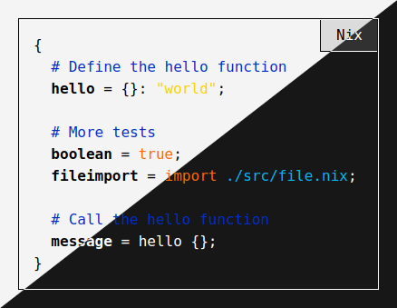
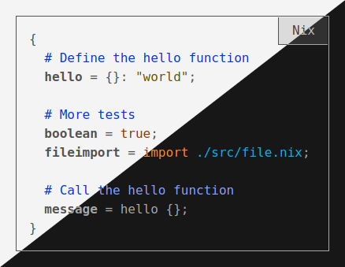

Dynamic CSS color themes with similar contrasts
2021-09-30 · 3 minutes readThis blog is built with Emacs, SCSS using Nix and deployed as static files to GitHub Pages. This blog also has quite some colors due to the syntax highlighting for code that is performed using CSS rules on HTML classes.
So in total I have 15 different colors defined, in which four of them is background and foreground colors, two of them is related to link and visited link colors. Then I have nine colors remaining which are related to syntax highlighting of code.
Colors like that can’t just be used together with a good result, one have to consider the different contrasts of colors against each other. I didn’t feel like making up all the colors for both the light and the dark background, I wanted the same color-scheme for both themes. So what I did was to write a SCSS function to adjust the color to get a specific contrast compared to the background where it’s supposed to be used.
So how do I use these colors is practice?
Raw color themes
Raw color themes which have some colors with too little contrast and some with too much contrast:

Adjusted contrast themes
Adjusted color themes which have all the colors contrast adjusted to the background:

How is this accomplished at build time?
Mozilla has a page about Color contrast, they also refer to Web Content Accessibility Guidelines (WCAG) 2.1. So there’s a clear definition to how to calculate the color contrast. It required a bunch of math and calculations to do a single comparison.
I’ve found some functions on the internet that already had been written that
I’ve improved upon. So I have the plain math functions in my math.scss
file. With some additional functions to calculate the contrast I’ve found in
other places that resulted in a function named contrast-color located in
functions.scss.
The usage of these functions is quite simple, here’s a SCSS example:
@import "path/to/functions/file";
// Background colors to calculate the
// colors against.
$darkBackgroundColor: #171717;
$lightBackgroundColor: #F4F4F4;
// The foreground color to use against
// the background colors.
$codeKeywordColor: #FF256F;
// Define the color themes as CSS
// variables for the light theme.
:root {
--background: #{$lightBackgroundColor};
--code-keyword-color: #{contrast-color(
$codeKeywordColor, $lightBackgroundColor)};
}
// Define the color themes as CSS
// variables for the dark theme.
@media (prefers-color-scheme: dark) {
:root {
--background: #{$darkBackgroundColor};
--code-keyword-color: #{contrast-color(
$codeKeywordColor, $darkBackgroundColor)};
}
}
// Use the colors in your theme
div {
background: var(--background);
color: var(--code-keyword-color);
}
So now I can select key colors once and get a consistent color contrast of about 7 on all of the colors on the page to not have some colors screaming while others have too little contrast that makes them hard to read.